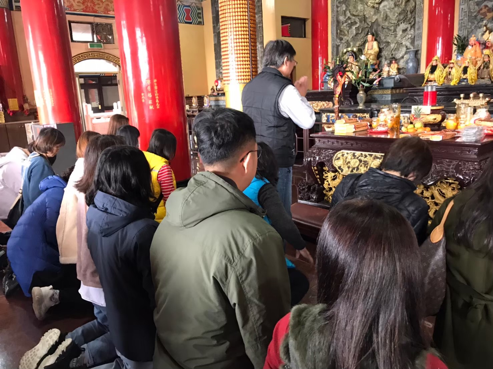
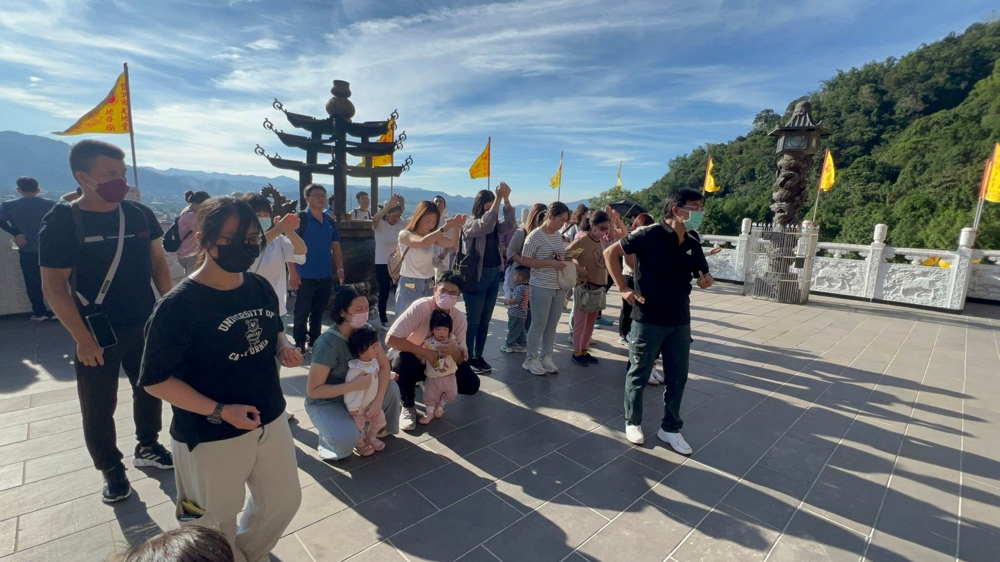
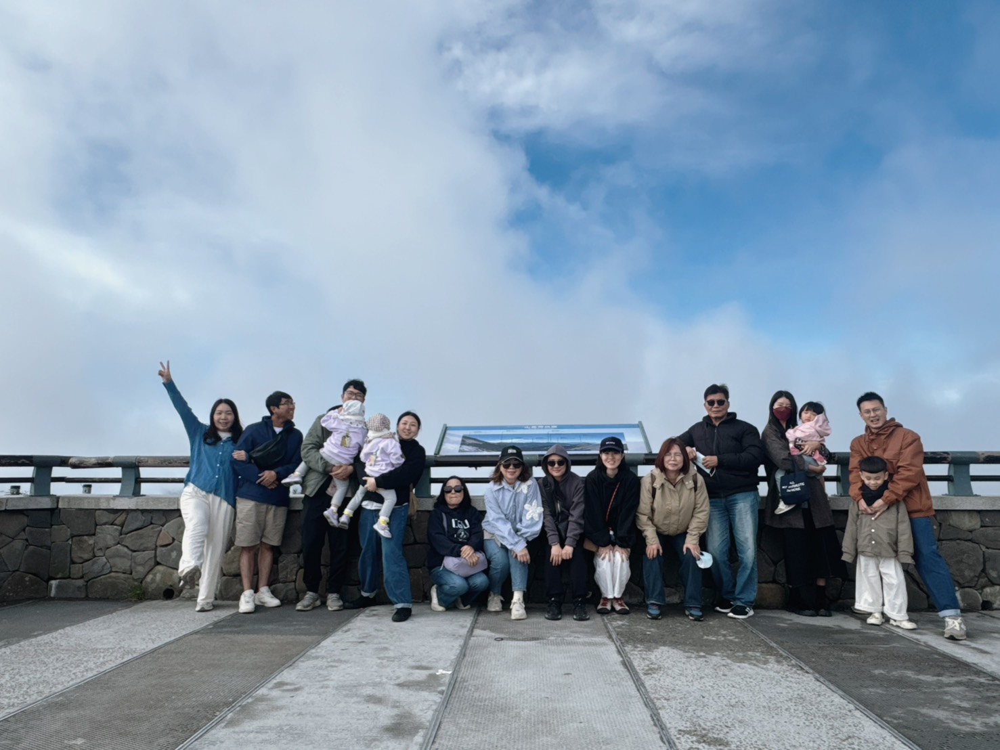

朝山活動

朝山活動為本道場重要修持課程之一，透過禮敬天地、感念聖恩、 參香禮拜及團體共修，使同修在行持之中學習恭敬、感恩與反省自我， 進而提升心性修養與品德涵養。
現代人生活步調快速，工作與家庭壓力繁重， 容易使身心陷入緊張與焦慮。 朝山活動除了是一種宗教禮儀， 更是一種沉澱心靈、回歸本性的修行方式。 透過虔誠參拜與靜心體悟， 讓自己暫時放下煩惱與執著， 找回內心的平靜與力量。

道場定期規劃朝山及參訪活動， 帶領同修走入名山勝地與宮觀聖境， 在親近自然的同時， 體悟天地運行之道， 學習謙卑、包容與感恩的人生智慧。
每一次朝山都是一次身心靈的洗禮， 同修們在活動過程中互相扶持、彼此鼓勵， 不僅增進修行道誼， 也建立正向積極的人生態度。

朝山不只是身體的行腳， 更是心靈的修行。 我們希望透過每一次活動， 引導有緣大眾學習正信修行理念， 培養慈悲心、責任心與服務精神， 並將所學實踐於家庭、職場及社會之中。
願所有參與朝山活動的同修， 都能在修持過程中淨化身心， 啟發智慧， 以更光明正向的心境面對人生， 並將善的力量傳遞給更多需要幫助的人。